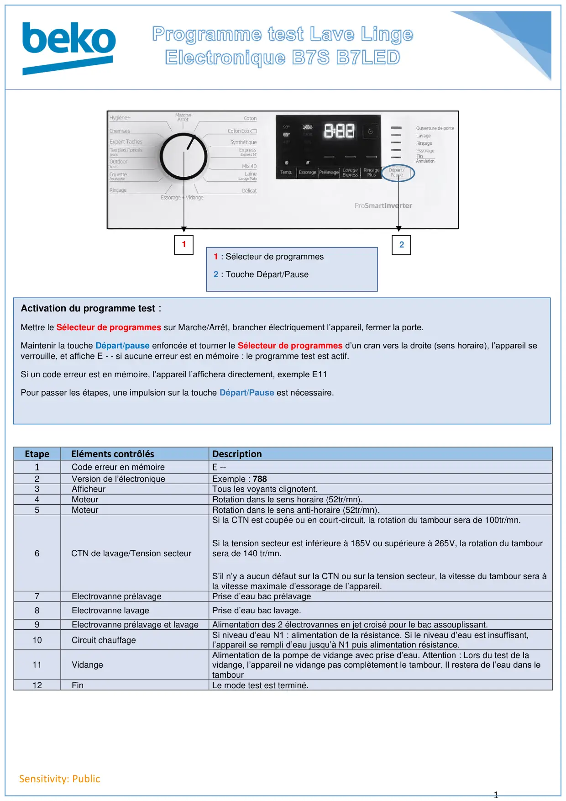
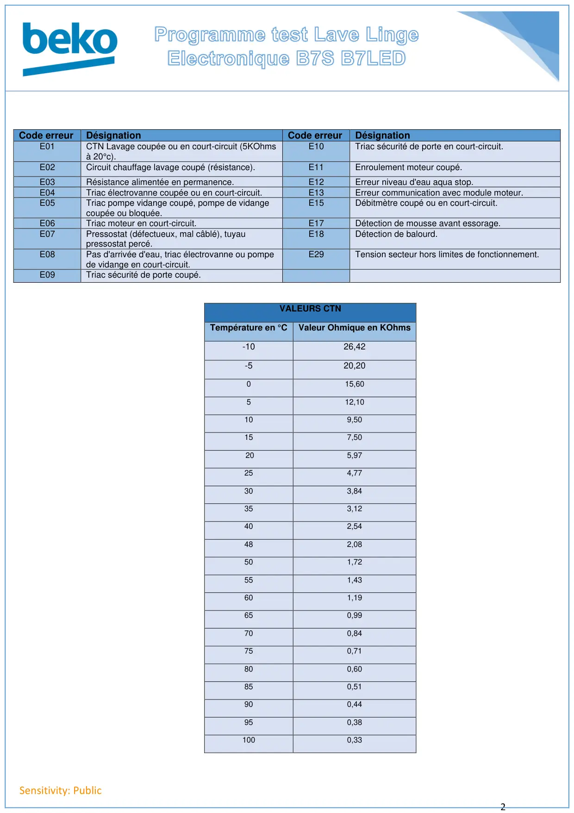

Prog Test lave linge Electronique B7S B7LED

1Sensitivity: PublicEtapeEléments contrôlésDescription1Code erreur en mémoireE --2Version de l’électroniqueExemple : 7883AfficheurTous les voyants clignotent.4MoteurRotation dans le sens horaire (52tr/mn).5MoteurRotation dans le sens anti-horaire (52tr/mn).6CTN de lavage/Tension secteurSi la CTN est coupée ou en court-circuit, la rotation du tambour sera de 100tr/mn.Si la tension secteur est inférieure à 185V ou supérieure à 265V, la rotation du tamboursera de 140 tr/mn.S’il n’y a aucun défaut sur la CTN ou sur la tension secteur, la vitesse du tambour sera àla vitesse maximale d’essorage de l’appareil.7Electrovanne prélavagePrise d’eau bac prélavage8Electrovanne lavagePrise d’eau bac lavage.9Electrovanne prélavage et lavageAlimentation des 2 électrovannes en jet croisé pour le bac assouplissant.10Circuit chauffageSi niveau d’eau N1 : alimentation de la résistance. Si le niveau d’eau est insuffisant,l’appareil se rempli d’eau jusqu’à N1 puis alimentation résistance.11VidangeAlimentation de la pompe de vidange avec prise d’eau. Attention : Lors du test de lavidange, l’appareil ne vidange pas complètement le tambour. Il restera de l’eau dans letambour12FinLe mode test est terminé.121 : Sélecteur de programmes2 : Touche Départ/PauseActivation du programme test :Mettre le Sélecteur de programmes sur Marche/Arrêt, brancher électriquement l’appareil, fermer la porte.Maintenir la touche Départ/pause enfoncée et tourner le Sélecteur de programmes d’un cran vers la droite (sens horaire), l’appareil severrouille, et affiche E - - si aucune erreur est en mémoire : le programme test est actif.Si un code erreur est en mémoire, l’appareil l’affichera directement, exemple E11Pour passer les étapes, une impulsion sur la touche Départ/Pause est nécessaire.
1 / 2
2Sensitivity: PublicCode erreurDésignationCode erreurDésignationE01CTN Lavage coupée ou en court-circuit (5KOhmsà 20°c).E10Triac sécurité de porte en court-circuit.E02Circuit chauffage lavage coupé (résistance).E11Enroulement moteur coupé.E03Résistance alimentée en permanence.E12Erreur niveau d'eau aqua stop.E04Triac électrovanne coupée ou en court-circuit.E13Erreur communication avec module moteur.E05Triac pompe vidange coupé, pompe de vidangecoupée ou bloquée.E15Débitmètre coupé ou en court-circuit.E06Triac moteur en court-circuit.E17Détection de mousse avant essorage.E07Pressostat (défectueux, mal câblé), tuyaupressostat percé.E18Détection de balourd.E08Pas d'arrivée d'eau, triac électrovanne ou pompede vidange en court-circuit.E29Tension secteur hors limites de fonctionnement.E09Triac sécurité de porte coupé.VALEURS CTNTempérature en °CValeur Ohmique en KOhms-1026,42-520,20015,60512,10109,50157,50205,97254,77303,84353,12402,54482,08501,72551,43601,19650,99700,84750,71800,60850,51900,44950,381000,33
2 / 2